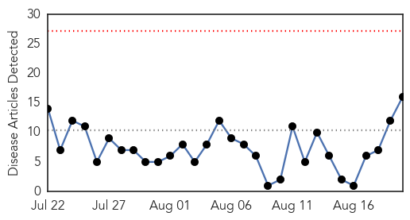
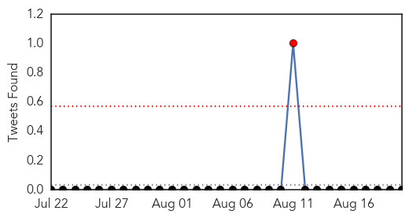
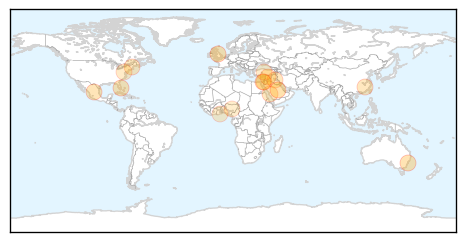
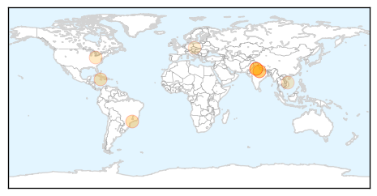

Influenza
30-Day Web Trend
0 alerts, 0 warnings

30-Day Twitter Trend
4 alerts, 0 warnings

Article Locations
Article Confidences
Top Articles:
- 0.949
- Scientists synthesise DNA in hunt for MERS vaccine
- 0.915
- Hazards of Nasal Flu Vaccine as Program is Rolled Out in British Schools
- 0.886
- John Hopkins U scientist questions CDC push for flu vaccine
- 0.866
- Narcolepsy, brain damage, and autoimmunity: the dark side of the vaccine agenda
- 0.860
- Flu
- 0.841
- School vacations and humidity linked to multiple waves of influenza in Mexico during the 2009 H1N1 pandemic
- 0.751
- August 19, 2015 Archives
- 0.751
- August 19, 2015 Archives
- 0.751
- August 19, 2015 Archives
- 0.751
- August 19, 2015 Archives
- 0.751
- August 19, 2015 Archives
- 0.747
- Fit & Proper: Do adults need vaccination?
- 0.651
- Farmers preparing for potentially devastating bird flu
- 0.633
- USDA prepares for bird flu vaccines despite uncertainty
- 0.626
- Farmers in Builsa South schooled on Bird Flu
- 0.597
- Rivers depopulates 7000 birds
Top Tweets:
-
No tweets found for Aug 20, 2015
Dengue Fever
30-Day Web Trend
0 alerts, 0 warnings

30-Day Twitter Trend
0 alerts, 0 warnings

Article Locations
Article Confidences

Top Articles:
- 0.997
- Common flu symptoms, consult expert, say doctors
- 0.959
- Can An Army Of Genetically Engineered Mosquitoes Stop Dengue Fever?
- 0.933
- Dengue fear sparks exodus in Kanpur
- 0.920
- Health Minister holds review meet on prevention of dengue in Delhi
- 0.850
- Health Ministry working to dispel myths surrounding transmission of mosquito borne diseases
- 0.791
- Health Secretary reviews preparedness on Dengue Malaria in Delhi
- 0.789
- Delhi's civic agencies asked to spread awareness on dengue
- 0.696
- Disease-carrying mosquitoes, biting ticks, poison ivy and ragweed: All will flourish with climate change
- 0.629
- Dengue fever claims two lives in Binh Duong - Viet Nam
- 0.540
- NDMC fines 4 Delhi hospitals for mosquito breeding : Mail Today, News
Top Tweets:
-
No tweets found for Aug 20, 2015